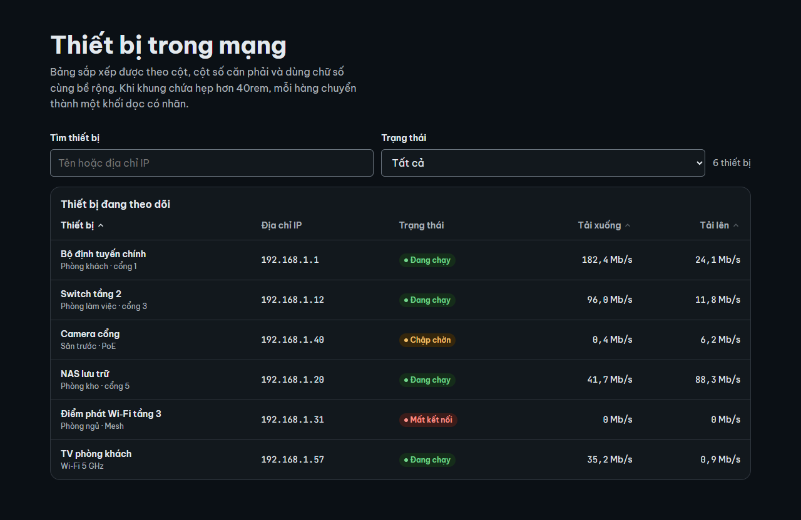
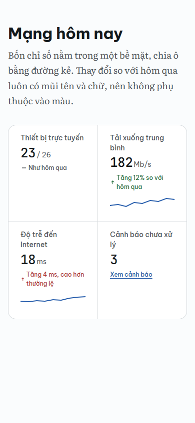
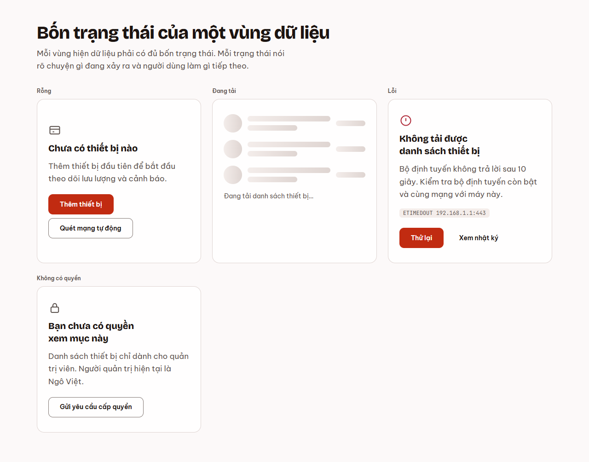
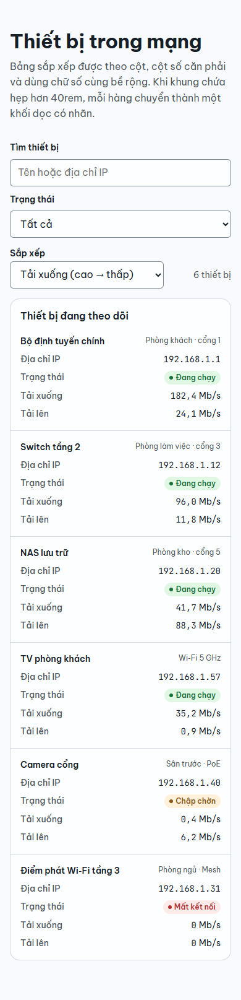
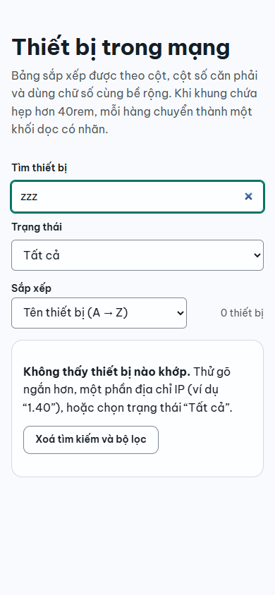

Báo cáo giai đoạn 1 của design-kit: nghiên cứu chuẩn hiện hành, kiểm kê công cụ trên PC1, rút ra bộ tiêu chí đo được và đề xuất cách để Opus dùng chúng mặc định.
Ngày 09/11/202622 nguồn đã đọc, 28 trích dẫn đã kiểm lạiKho tri thức: tieu-chuan-va-cach-huong-dan-ai-lam-giao-dien-web-dep-de-dun
Chủ đã chốt phương án C
Phương án C gồm skill design-kit, lệnh kiểm design-kit check nằm trong design-kit, ba hướng thẩm mỹ, và khối mẫu có cả bản HTML/CSS thuần lẫn React + shadcn/ui. Đợt 1 đã xây xong, kết quả ở mục Giai đoạn 2.
Lý do của cách làm: chỉ dẫn thẩm mỹ cụ thể giúp Claude tốt lên ngay [s4]. Nhưng LLM tự chấm UI chưa bằng người [s20] và khó tự cải thiện đều qua nhiều vòng [s21]. Vì vậy phần đo được giao cho máy, phần đẹp giao cho chủ.
Đã thêm quy tắc vào ~/.claude/CLAUDE.md (chủ đồng ý 09/11/2026). Đánh giá A/B: chủ chấm mù và chọn bản design-kit ở cả 3/3 đề.
Vì sao Opus thường dừng ở "chạy được"
Anthropic gọi đây là hội tụ phân phối. Khi không có chỉ dẫn, mô hình chọn lựa chọn phổ biến nhất trong dữ liệu. Với landing page, đó gần như luôn là font Inter, gradient tím trên nền trắng và chuyển động tối thiểu [s4]. Bài viết cũng cho thấy hai điều có thể dùng ngay:
Mô hình nghe theo chỉ dẫn. Chỉ cần dặn "tránh Inter và Roboto" hay "dùng nền có chiều sâu" là kết quả khá lên ngay [s4].
Chỉ dẫn phải quy ra mã được. Hướng dẫn càng gắn với CSS và token cụ thể thì Claude làm càng đúng [s4].
Thiếu sót thứ ba nằm ở quy trình. Hiện chưa có bước nào đo trang đã render trước khi báo xong. Phiên lan-topo-card là ví dụ: thẻ có tương phản 3,6:1 và chữ 9,9px vẫn lọt qua. Hướng dẫn của Claude Code cũng khuyên đòi bằng chứng (lệnh đã chạy kèm output, hoặc ảnh chụp) khi Claude báo xong [s13].
Kiểm kê công cụ trên PC1
Đã có sẵn nhiều thứ. Phần còn thiếu nằm ở ba chỗ: kiểm a11y trên DOM đã render, đo hiệu năng, và một quy trình nối các công cụ lại với nhau.
Công cụ
Làm được
Còn thiếu
Skill impeccable 4.8.1 (engine 0.1.19)
24 lệnh con (shape, critique, audit, polish, typeset, layout…). PRODUCT.md và DESIGN.md theo đặc tả Google. Bộ dò có 62 luật: 31 luật dấu hiệu AI ("slop") và 31 luật chất lượng. Ngưỡng: tương phản 4,5:1, chữ < 12px, dòng ~80 ký tự, giãn dòng < 1,3. audit chấm /20, critique chấm /40 theo 10 heuristic Nielsen. Có 4 agent phụ.
Hook bộ dò chưa bật. Luật cần render chỉ chạy với .html đã build hoặc URL. Không có kiểm a11y kiểu axe, không đo CWV. Phần "đẹp" do agent tự chấm qua ảnh chụp.
CLI imp-axi 0.1.0
Bọc impeccable detect thành TOON gọn: tổng, luật kèm cách sửa, số lỗi theo tệp. Lệnh detect, rules, patch-skill. Chuyển tiếp --viewport và --cdp.
Không chụp ảnh. Không tự trải phẳng shadow DOM (chỉ chuyển tiếp cho engine). Xem ghi chú bên dưới.
palette-axi 0.2.0
Kiểm và sinh bảng màu OKLCH theo 7 luật: trung tính nhuốm sắc, nền, dải màu nhấn, thang, ý nghĩa màu trạng thái, APCA Lc ≥ 60 cho chữ, gamut sRGB, cặp on-X. Xuất CSS và Tailwind.
Chỉ đọc văn bản tĩnh: bỏ qua var() và color-mix(), không biết màu nào thực sự nằm trên nền nào.
Plugin frontend-design 1.1.1
Hướng dẫn 72 dòng: lập kế hoạch token trước khi code, liệt kê 5 cụm mặc định của AI cần tránh, dòng < 80 ký tự, chỉ một điểm chuyển động, tự chụp màn hình để phê bình.
Không có máy đo. Nội dung trùng phần lớn với impeccable.
Skill artifact-design
Skill dựng sẵn của ứng dụng: hợp đồng trang Artifact (tiêu đề, token sáng/tối, CDN được phép, chạy được trên điện thoại).
Không có tệp trên đĩa nên không đối chiếu được. Chỉ dùng cho Artifact.
Plugin modern-web-guidance 0.0.194
Tìm theo ngữ nghĩa trong bộ hướng dẫn API web hiện đại (dialog, popover, view transitions, CWV, form). Coi tính năng "Baseline widely available" là dùng được không cần fallback.
Cần mạng mỗi lần chạy (npx @latest). Chỉ nói về API, không nói về thẩm mỹ.
Môi trường
chrome-devtools-axi 0.1.44 (chụp màn hình, DOM, hiệu năng), Playwright Python 1.63 kèm Chromium, Claude Browser và Claude in Chrome.
Không có axe-core, Lighthouse, công cụ so sánh ảnh hay @google/design.md.
Cần kiểm thực tế: phiên lan-topo-card ghi nhận imp-axi quét URL báo 0 lỗi vì không vào shadow DOM. Mã engine Impeccable lại cho thấy có duyệt node.shadowRoot khi root đang mở. Bước chụp thì đánh dấu phần tử có shadow là unsupported. Có thể lỗi chỉ xảy ra ở một số luật, hoặc do card Lit dùng closed root. Nên tái hiện trước khi sửa trong imp-axi. Thẻ đề xuất sửa imp-axi đã có.
Tiêu chuẩn hiện hành kèm nguồn
Nhãn chuẩn là văn bản của W3C hoặc Google. nghiên cứu là nghiên cứu có kiểm chứng (Baymard, Anthropic, bài báo). quy ước là ngưỡng của công cụ hoặc thông lệ ngành, chưa có nguồn sơ cấp trong kho tri thức.
Công năng
Nhóm
Yêu cầu
Loại
Nguồn
Tương phản chữ
WCAG 1.4.3 (AA): 4,5:1, chữ lớn (≥ 18pt, hoặc 14pt đậm) 3:1. Không làm tròn: 4,499:1 là trượt.
chuẩn
s5
Tương phản phi chữ
WCAG 1.4.11: viền ô nhập, icon, trạng thái ≥ 3:1.
chuẩn
s6
APCA
Đo tương phản đều theo cảm nhận, hợp với dark mode. Là ứng viên WCAG 3, chưa thành chuẩn: dùng kèm, không thay WCAG 2.
quy ước
chủ đề màu KB c10
Vùng bấm
WCAG 2.2 SC 2.5.8 (AA, mới): ≥ 24×24 CSS px, hoặc đủ khoảng cách. Mức AAA 2.5.5 là 44×44.
chuẩn
s1
Focus
2.4.11 (AA, mới ở 2.2): phần tử đang focus không bị che hoàn toàn (ví dụ bởi header dính). 2.4.13 (AAA): chỉ báo focus ≥ viền 2 CSS px.
chuẩn
s9, s10
Reflow
WCAG 1.4.10: ở bề rộng 320 CSS px, nội dung dàn lại, không cuộn ngang.
chuẩn
s8
Core Web Vitals
LCP ≤ 2,5 s, INP ≤ 200 ms, CLS ≤ 0,1, xét ở phân vị 75. INP thay FID từ 2024.
chuẩn
s2
Responsive
Container queries: container-type: inline-size và đơn vị cq*, để thành phần tự co theo khung chứa thay vì theo màn hình.
chuẩn
s3
Form và autofill
Ô email đăng nhập dùng autocomplete="username". Mật khẩu đăng nhập dùng current-password, đăng ký hoặc đổi mật khẩu dùng new-password. PIN dùng inputmode="numeric".
light-dark() (Baseline 2024) cùng color-scheme. Cả hai theme phải đạt tương phản.
chuẩn
s16
Tiếng Việt
Font phải có đủ dấu chồng (ví dụ ể, ỗ, ự) và chịu được giãn dòng chặt mà không cắt dấu. Đặt lang="vi". Nhiều trang web hỏng dấu.
quy ước
s18
Trạng thái
Mỗi vùng dữ liệu có đủ trạng thái rỗng, đang tải, lỗi (kèm cách khắc phục) và không có quyền.
quy ước
impeccable craft-floor.md
Thẩm mỹ
Nhóm
Yêu cầu
Loại
Nguồn
Độ dài dòng
Thân bài 50–75 ký tự (khoảng max-width: 65ch). WCAG 1.4.8 (AAA) cho phép tối đa 80.
nghiên cứu
s17
Thang chữ
Định nghĩa thang cho màn nhỏ và màn lớn rồi nội suy bằng clamp(). Các bậc cách nhau ≥ 1,25 lần, nếu thấp hơn impeccable báo "phân cấp phẳng".
quy ước
s19, impeccable
Cỡ chữ tối thiểu
Thân bài ≥ 16px. Nhãn phụ ≥ 12px: impeccable báo lỗi dưới 12px và lỗi nặng dưới 11px.
quy ước
impeccable
Màu OKLCH
Một sắc chủ đạo nhuốm trung tính (C 0,01–0,06). Nền tối không đen tuyền (L 0,13–0,20). Màu nhấn cùng một dải L. Màu trạng thái theo ý nghĩa. Có kiểm gamut.
quy ước
chủ đề màu KB, palette-axi
Nhịp khoảng cách
Bậc 4px, ít giá trị. impeccable báo lỗi khi khoảng cách đơn điệu.
quy ước
impeccable
Dấu hiệu "UI do AI làm"
Font Inter mặc định, gradient tím, chữ gradient, eyebrow hay kicker trên tiêu đề, thẻ lồng thẻ, viền trái màu, nền lưới, glow tối, easing nảy, lạm dụng gạch ngang dài. Bộ dò có 31 luật cho nhóm này.
nghiên cứu
s4, impeccable
Design system mã nguồn mở và giấy phép
Giấy phép đo bằng GitHub API ngày 09/11/2026. Không nên dựa vào một design system duy nhất: lấy nguyên tắc và token của nhiều bên, còn primitive có a11y thì lấy từ Radix.
Nguồn
Giấy phép
Dùng vào việc gì
shadcn/ui
MIT
Mã chép thẳng vào dự án (React, Tailwind, Radix). Hợp làm khối mẫu cho dự án React.
Radix Primitives / Themes
MIT
Primitive đã lo phần a11y. Thang màu 12 bậc.
Tailwind CSS v4
MIT
Khai báo token bằng @theme, palette OKLCH 11 bậc.
DaisyUI
MIT
Class thành phần trên Tailwind, đổi theme bằng biến CSS. Folio đang dùng.
Fluent 2 (microsoft/fluentui)
MIT
Token và Web Components. GitHub ghi NOASSERTION nhưng tệp LICENSE là MIT.
Material 3 (material-web)
Apache-2.0
README ghi đang ở chế độ bảo trì, chờ người duy trì mới. Chỉ mượn nguyên tắc và token.
IBM Carbon, Adobe Spectrum
Apache-2.0
Tài liệu a11y và token rất tốt để tham khảo.
Apple HIG
Độc quyền
Chỉ học nguyên tắc. Giấy phép tài nguyên (06/2023) dành cho ứng dụng nền tảng Apple. Chưa đọc hết PDF.
Cách hướng dẫn AI hiệu quả
DESIGN.md là cầu nối
Đặc tả của Google Labs ghép token YAML (máy đọc) với phần lý do viết bằng markdown (người đọc). "Token là giá trị chuẩn" [s12]. CLI @google/design.md lint bắt tham chiếu token hỏng và kiểm tương phản WCAG, có thể xuất sang Tailwind v4 @theme hoặc W3C DTCG [s12]. Impeccable cũng theo đặc tả này. Lưu ý: đặc tả còn ở bản alpha.
Ví dụ mẫu và vòng phản hồi
Thêm ví dụ mẫu và nhắc bằng hình ảnh giúp LLM góp ý UI tốt hơn 55%, nhưng vẫn chưa bằng người chấm [s20]. Phản hồi tự động từ trình biên dịch và mô hình đa phương thức giúp mô hình sinh mã UI tốt hơn [s22]. Mô hình mạnh nhất vẫn khó tự cải thiện đều qua nhiều vòng [s21]. Kết luận: dùng máy đo làm cổng, giới hạn số vòng, phần thẩm mỹ để chủ duyệt.
Bộ tiêu chí kiểm được
Mỗi dòng ghi ngưỡng, cách đo và loại cổng. cứng: trượt thì chưa được báo xong. mềm: báo cáo, sửa nếu không có lý do. người: chủ duyệt trên ảnh chụp.
Tiêu chí
Ngưỡng
Đo bằng
Cổng
Tương phản chữ
≥ 4.5:1 (lớn ≥ 3:1), cả sáng lẫn tối
imp-axi detect trên trang render, axe-core
cứng
Tương phản thân chữ APCA
|Lc| ≥ 60 (màu nhấn ≥ 45)
palette-axi
mềm
Phi chữ
≥ 3:1
axe-core
cứng
Vùng bấm
≥ 24×24 px; nút chính trên di động ≥ 44
axe target-size, script đo DOM
cứng
Reflow
320 px: scrollWidth ≤ clientWidth
chụp ở 320, 390, 1280 px
cứng
Nhãn và autocomplete
100% ô nhập có nhãn; autocomplete đúng loại
axe-core
cứng
Focus
Thấy được, ≥ 2px, không bị header che
script Tab qua trang, chụp ảnh
mềm
Giảm chuyển động
Có nhánh reduce cho mọi animation
giả lập reduce, so ảnh
cứng
CWV (lab)
LCP ≤ 2.5 s, CLS ≤ 0.1, TBT ≤ 200 ms
chrome-devtools-axi trace
mềm
Tiếng Việt
lang="vi"; font có subset vietnamese; giãn dòng thân ≥ 1.5, tiêu đề ≥ 1.2
script kiểm computed style
cứng
Cỡ chữ
Thân ≥ 16px; nhãn ≥ 12px
imp-axi (tiny-text)
cứng
Độ dài dòng
≤ 75ch (mục tiêu 60–70)
imp-axi (line-length)
mềm
Thang chữ, khoảng cách
Tỉ lệ bậc ≥ 1.2; ≤ 7 cỡ chữ; khoảng cách theo bậc 4px
so với token DESIGN.md (luật design-system của impeccable)
mềm
Dấu hiệu AI
0 lỗi slop, hoặc có lý do ghi trong DESIGN.md
imp-axi detect
cứng
Trạng thái
Đủ rỗng, tải, lỗi, không quyền cho mỗi vùng dữ liệu
danh sách kiểm, agent tự liệt kê
mềm
Phân cấp, cá tính, "đẹp"
Một điểm nhấn chính mỗi màn; khớp hướng trong DESIGN.md
ảnh chụp 3 viewport × sáng/tối
người
Lab CWV không thay được số đo thật ở p75. TBT chỉ là chỉ số thay thế cho INP khi đo trong phòng thí nghiệm. Ngưỡng "mềm" có thể nâng thành "cứng" sau khi chạy thử trên vài dự án.
Vòng tự kiểm đề xuất
Đo trên trang đã render, không đo mã nguồn: nhiều luật (tương phản, cỡ chữ, tràn ngang) chỉ có nghĩa khi trình duyệt đã tính style. Với Web Component, trải phẳng shadow DOM trước khi quét.
Giới hạn 3 vòng vì mô hình khó tự cải thiện đều qua nhiều vòng [s21]. Hết 3 vòng mà vẫn trượt thì báo chủ, kèm danh sách lỗi còn lại.
Ba phương án để Opus dùng mặc định
Ba phương án không loại trừ nhau. Đúng hơn, đây là ba mức đầu tư, mức sau dựa trên mức trước.
A. Quy tắc trong CLAUDE.md
Thêm khoảng 30 dòng ngưỡng vào ~/.claude/CLAUDE.md, kèm một DESIGN.md mẫu để chép sang từng dự án.
Được
Luôn được nạp, làm trong một buổi, không cần mã.
Mất
Tốn ngữ cảnh ở mọi phiên, kể cả phiên không làm UI. Không có cổng đo, nên vẫn có thể lọt lỗi 9,9px như trước.
Công sức
~0,5 ngày
B. Skill design-kit + lệnh kiểm
Skill nạp khi làm UI: bộ tiêu chí, DESIGN.md gốc, quy trình vòng tự kiểm. Lệnh design-kit check <url|html> theo chuẩn AXI gộp các bước render, trải phẳng shadow, imp-axi, axe-core, CWV lab và chụp 3 viewport. CLAUDE.md chỉ thêm 2 dòng trỏ tới skill.
Được
Có cổng cứng thật. Không tốn ngữ cảnh khi không làm UI. Tận dụng impeccable, imp-axi, palette-axi thay vì viết lại.
Mất
Phải viết và bảo trì một CLI. Cần cài axe-core và Playwright cho Node. Skill có thể không được gọi nếu mô tả kém, nên cần kiểm tra khả năng kích hoạt.
Công sức
~2–3 ngày
Khuyến nghị
C. B + thư viện khối mẫu
Thêm 15–20 khối HTML/CSS thuần dùng token (đầu trang, form, bảng, trạng thái rỗng/lỗi/tải, thẻ số liệu, điều hướng), mỗi khối đã qua cổng. Skill đưa 2–3 khối gần nhất làm ví dụ.
Được
Ví dụ mẫu là đòn bẩy mạnh nhất có bằng chứng [s20]. Kết quả đồng đều giữa các dự án.
Mất
Dễ làm mọi dự án trông giống nhau, tức lại một kiểu hội tụ. Cần nhiều biến thể theo từng "chế độ" (marketing, ứng dụng, tài liệu).
Công sức
+3–5 ngày
Vì sao chọn B
Phương án A chỉ sửa được nửa đầu vấn đề, tức chỉ dẫn [s4], mà không có bằng chứng (lệnh và ảnh chụp) như Claude Code khuyên [s13]. Phương án C có lợi thật, nhưng chỉ đáng làm khi đã có cổng đo để mọi khối mẫu được kiểm. Làm C trước khi có B thì sẽ tạo ra khối mẫu "trông đẹp" mà chưa ai đo. Lập luận mạnh nhất cho A: rẻ và luôn có hiệu lực. Vì vậy B vẫn giữ 2 dòng trong CLAUDE.md để skill luôn được gọi khi làm UI.
Chủ đã trả lời (09/11/2026)
Câu hỏi
Chủ chọn
Phương án
C: đi thẳng tới thư viện khối mẫu, gồm cả phần của B
Lệnh kiểm đặt ở đâu
Trong design-kit. imp-axi chỉ làm một việc là quét
Hướng thẩm mỹ
2–3 hướng: đã làm Đêm, Giấy, Đậm
Khung kỹ thuật
Cả hai: HTML/CSS thuần làm gốc, có thêm bản React + shadcn/ui
Giai đoạn 2: đợt 1 đã xây
Toàn bộ nằm trong repo D:\code\design-kit. Mỗi phần đều đã chạy và đo thật, không chỉ viết ra.
Phần
Đã làm
Bằng chứng
Token và ba hướng
tokens/ gồm fonts.css, core.css, dem.css, giay.css, dam.css. Mỗi hướng có bản sáng và tối. Ba tệp design/<huong>/DESIGN.md sinh tự động từ token.
126/126 cặp màu đạt tương phản và nằm trong gamut sRGB. Lint DESIGN.md: 0 lỗi, 0 cảnh báo.
Cổng design-kit check
CLI chuẩn AXI. Render 320/390/1280 × sáng/tối, rồi chạy axe-core WCAG 2.2 AA, probe đi xuyên shadow DOM, kiểm giảm chuyển động, focus, LCP/CLS và Impeccable. Có chụp ảnh. Đã cài toàn cục qua npm link.
5/5 test đạt. Trang có lỗi cố ý: cổng bắt đủ 11 lỗi cứng, kể cả lỗi trong shadow root.
FormDangNhap, TrangThai, dùng chung token qua @theme
6/6 trang đạt (bản build, 3 hướng).
Skill
skill/SKILL.md, cài bằng junction tại ~/.claude/skills/design-kit
Harness đã nhận skill và liệt kê trong danh sách.
Ba hướng trên cùng một bộ khối

Đêm, tối, 1280px: bảng dữ liệu

Giấy, sáng, 390px: dải chỉ số

Đậm, sáng, 1280px: bốn trạng thái
Máy đo bắt được gì khi xây
Impeccable không nhìn vào shadow DOM. Đã tái hiện: engine bỏ sót chữ 9,9px và tương phản 1,55:1 trong một open shadow root, trong khi probe và axe bắt được cả hai. Vậy lỗi ở phiên lan-topo-card nằm ở engine chứ không ở imp-axi.
ch đo sai với chữ Việt. Chính trang này đặt max-width: 68ch nhưng thực tế chứa khoảng 93 ký tự mỗi dòng. Token độ dài dòng vì thế chuyển sang 32em.
Chữ SVG co theo viewBox. Sơ đồ ở trên khai báo 13px, nhưng ở khổ 390px chỉ còn khoảng 5px. Đã sửa, và probe giờ đo cỡ chữ đã hiển thị.
Font nạp bằng @import trong tệp token bị bundler bỏ mất. Đã tách ra fonts.css và nạp tệp này đầu tiên.
Tên nút không chứa chữ đang hiện (WCAG 2.5.3) và bảng cuộn ngang không focus được: axe bắt cả hai, đã sửa.
shadcn CLI đã ghi import { cn } from "cn" và cài một gói npm lạ tên cn. Đã gỡ gói và ghi vào danh sách bẫy.
Duyệt bằng mắt bắt thêm
Bốn thẻ trong khối trang-thai lệch đỉnh nhau 20–50px. Tiêu đề ở trang đầu trang dính sát đoạn văn. Máy báo đạt cả hai trường hợp, chỉ ảnh chụp mới cho thấy. Cả hai đã sửa.
Đợt 2 và đánh giá A/B (09/11/2026)
Đợt 2 khối mẫu:hero, bai-viet, thanh-ben, thong-bao, bo-loc (kèm phân trang). Bản React có thêm bảng dữ liệu và hộp thoại. Toàn thư viện có 11 khối HTML và 4 khối React. Cổng chạy trên 54 trang (3 hướng, có cả trạng thái mở): 0 lỗi cứng.
Cổng nhanh hơn khoảng 10 lần nhờ chạy song song (--jobs). Có thêm phép đo inner-scroll để bắt bảng bị cắt cột trong vùng cuộn ngang.
Đánh giá A/B, chi tiết trên trang Folio "Chấm mù A/B": 3 đề, mỗi đề 2 agent Opus.
Bản mặc định: 12 lỗi cứng, 48 lỗi mềm. Bản design-kit: 0 lỗi cứng, 7 lỗi mềm.
Chủ chấm mù, chọn bản design-kit ở cả 3/3 đề.
Giới hạn: bản design-kit tình cờ luôn ở cột phải, nên chưa loại được thiên lệch vị trí.
Chi phí của bản design-kit: thời gian gấp 2–3 lần, token gấp khoảng 1,4 lần.
Bài học đã đưa vào kit:
[hidden] bị display:grid đè.
Cổng chỉ đo lần render đầu, nên trạng thái phải mở được bằng URL.
tailwind-merge thay thế lớp chứ không cộng thêm.
shadcn add lần nào cũng cài lại gói cn.
Python trên Windows ghi CRLF, làm hỏng frontmatter của skill.
Hoàn tất: công cụ tự nhắc dẫn đường, cổng đo cả trạng thái (09/11/2026)
Chủ muốn chính công cụ nhắc AI làm quy trình dễ như phần hướng dẫn trong game: hướng dẫn từng bước, làm đến đâu hướng dẫn đến đấy. Trước đây chỉ skill nhắc việc này. Nay CLI cũng nhắc, và cổng đo được một phần.
Phần
Đã làm
Bằng chứng
CLI tự nhắc
design-kit in mục workflow: lập bản đồ tác vụ, rồi gắn mỗi chỗ dễ lúng túng với một mẫu (từng bước, danh sách Bắt đầu, mẹo đúng lúc, rỗng biết chỉ đường, Hoàn tác). Mỗi lần design-kit check đều kết thúc bằng lời nhắc "Guide like a game".
Đã chạy thử cả hai lệnh, lời nhắc hiện đúng.
Phép đo guide (mềm)
Báo nút đi tiếp chỉ ghi "Tiếp"/"Next", câu báo rỗng không kèm nút gỡ, tour hoặc hộp "Chào mừng" tự bật khi mở trang.
Test cài cả ba lỗi vào trang mẫu, cả ba đều bị bắt.
Đo trạng thái sau thao tác
--steps và tệp <trang>.steps.json. Mỗi trạng thái nạp trang mới, bấm hoặc gõ, rồi được đo đủ mọi tiêu chí và có dòng phán quyết riêng. Bước nào không làm được thì báo lỗi cứng.
Viết cho 9 khối HTML và 3 khối React. Test 10/10.
Focus ở khổ hẹp
Kiểm Tab ở cả 1280 và 390. Báo khi focus rơi vào phần tử vô hình.
Bắt được lỗi thật ở bảng dữ liệu (dưới đây).
Báo lỗi cho Impeccable
Tái hiện với bản 4.8.1: trang chỉ có lỗi trong shadow root thì Impeccable báo 0 lỗi. Issue đã soạn ở docs/bao-loi-impeccable-shadow-dom.md.
Chưa gửi, chờ chủ duyệt.
Cách đo mới tìm ra lỗi thật trong chính các khối
Bảng dữ liệu không sắp xếp được trên điện thoại. Dưới 40rem, tiêu đề cột bị giấu kiểu sr-only, kéo theo các nút sắp xếp. Bước bấm sắp xếp hỏng ở 320/390. Phím Tab thì rơi vào nút vô hình. Đã sửa: ẩn hẳn tiêu đề và thêm ô chọn "Sắp xếp". Bản React cũng không có cách sắp xếp ở khổ hẹp, đã sửa tương tự.
Tìm không ra thì bảng trống trơn. Bảng giờ nói lý do và có nút "Xoá tìm kiếm và bộ lọc" (cả HTML lẫn React).
Bộ lọc tắt hết mức độ thì chỉ hiện số 0. Giờ khối ghi: "Chưa chọn mức độ nào: bật ít nhất một mức để xem cảnh báo."
Duyệt ảnh chụp bắt thêm những lỗi máy đo báo đạt:
Bảng ghi "Tên thiết bị (A → Z)", nhưng hàng không hề được xếp. Đã cho xếp thật ngay khi tải.
Ở khổ hẹp, tiêu đề bảng bị bóp thành cột hẹp, mỗi dòng một chữ; số và đơn vị bị tách xa nhau ("182,4 …… Mb/s"); nhãn "Địa chỉ IP" hiện bằng font chữ số. Đã sửa cả ba.
Thu hẹp hộp mẹo để dòng chữ không quá dài thì mẹo leo lên cạnh công tắc, mũi tên trỏ vào khoảng trống. Đã chuyển dòng đó sang grid: mẹo nằm ngay dưới công tắc.
Có hai báo nhầm của phép đo focus mới, đã sửa trong cổng chứ không sửa khối:
Công tắc tuỳ biến: input trong suốt, vòng focus vẽ trên span.
Mẹo đang chạy hiệu ứng mở, độ mờ còn bằng 0 đúng lúc đo.

Khổ 390: ô "Sắp xếp" thay cho tiêu đề cột đã ẩn.

Tìm "zzz": nói lý do, chỉ cách gỡ.
Còn lại
Gửi báo lỗi shadow DOM cho Impeccable
Chủ đã đồng ý gửi. Chế độ tự động của Claude Code chặn lệnh tạo issue, nên chủ tự chạy lệnh ghi trong docs/bao-loi-impeccable-shadow-dom.md.
Gộp phụ thuộc để chạy độc lập?
Mục tiêu "độc lập": trên một máy Windows hay Linux bất kỳ, chỉ cần git clone rồi npm install là cổng chạy đủ. Có máy đường dẫn D:\code hay không cũng vậy, và không cần các dự án khác của chủ.
Nguyên tắc chọn: gộp những gì design-kit tự sở hữu, hoặc nhỏ và ít đổi (dữ liệu, font, thư viện npm, bằng chứng). Không chép vào những thứ là sản phẩm riêng, có vòng đời riêng hoặc nặng (trình duyệt, engine Impeccable, các skill khác). Với nhóm này: ghim phiên bản, tải khi cần, thiếu thì cổng vẫn chạy và báo rõ.
Thành phần
Hiện tại
Đề xuất
Lý do
Script đổi màu, kiểm cặp màu (colorjs.io)
Skill gọi node D:/code/design-kit/scripts/doi-mau.mjs. colorjs.io chỉ là devDependency.
Gộp Đưa vào dependencies, thêm lệnh con design-kit doi-mau, design-kit kiem-mau.
Đây là lỗi độc lập có thật: cài như một gói (không có devDependency) thì lệnh đổi màu hỏng ngay.
Đường dẫn cứng trong skill
2 chỗ D:\code\design-kit
Gộp Skill hỏi design-kit lấy đường dẫn của kit, rồi gọi lệnh con.
Máy khác, phiên cloud không có ổ D.
Font (Be Vietnam Pro, Literata, Bricolage Grotesque, JetBrains Mono)
Tải từ Google Fonts
Gộp Thêm bản tự host: woff2 chỉ gồm bộ chữ Latin và tiếng Việt. Ước chừng 1 MB, cần đo lại. Có hai tệp, fonts.css (CDN) và fonts-local.css.
Card Home Assistant và trang Folio chạy trong mạng nhà, có lúc không ra Internet. Không gọi bên thứ ba thì riêng tư hơn. Cả bốn font dùng giấy phép OFL, được phép chép.
Bằng chứng cho ngưỡng (s1–s36, c29–c36)
Nằm trong kho tri thức research-hub
Gộp bản xuất Xuất ra docs/nguon.md: mỗi nguồn kèm URL và câu trích đã kiểm.
tieu-chi.md đang trỏ tới một kho ở ngoài repo. Kho vẫn là bản gốc, repo giữ một bản chụp.
Lint DESIGN.md (@google/design.md)
Tải bằng npx -p mỗi lần chạy
Gộp Thêm vào devDependencies, chạy bằng npm run lint:design.
Ghim được phiên bản, chạy được khi không có mạng.
Trình duyệt
Edge, không có thì Chrome có sẵn trên máy
Không gộp Thêm đường lùi: không có Edge hay Chrome thì dùng Chromium của Playwright (npx playwright install chromium).
Trình duyệt nặng hơn 150 MB và cần cập nhật bảo mật. Container Linux của Woodpecker không có Edge.
Engine Impeccable
Lấy từ skill impeccable. Tệp 20,8 MB, chỉ có bản Windows.
Tải khi cần Ghim phiên bản, tải từ trang release của pbakaus/impeccable về bộ nhớ đệm, kiểm checksum. Không có thì cổng báo "skipped", như hiện nay.
Giấy phép Apache-2.0 cho phép chép, nhưng mỗi lần cập nhật sẽ đẩy thêm 20 MB vào lịch sử git. Engine cũng đang chờ sửa lỗi shadow DOM, nên cần cập nhật theo bản mới.
Đó là sản phẩm độc lập. Chép vào thì thành hai bản lệch nhau.
axe-core, playwright-core, axi-sdk-js
Gói npm từ registry
Đã gộp Giữ nguyên.
Cả ba lấy từ registry công khai, đã có trong package.json.
Đã làm (09/11/2026, bản 0.2.0): làm đúng theo bảng trên. Đã thử cài từ gói ra một thư mục tạm, tách khỏi repo: design-kit, doi-mau và check đều chạy. Bản tải engine Impeccable khớp sha256. Plugin qua claude plugin validate. Font tự host chỉ 414 KB, vì ba trong bốn họ font là font biến thiên. Còn chờ chủ: bật repo trong Woodpecker, cài plugin trên PC1.
Làm cùng lúc với việc đóng gói thành plugin: đẩy lên repo riêng tư, thêm Woodpecker CI, plugin gồm skill và hook nhắc. CI chạy trên Linux là phép thử "độc lập" thật: nếu repo còn dựa vào thứ gì chỉ có trên PC1, CI sẽ đỏ.
Nguồn
Đọc ngày 09/11/2026. Mọi trích dẫn dùng trong báo cáo đã kiểm lại bằng research-axi kb verify (28/28 khớp). Trang w3.org bị Cloudflare chặn, nên các tiêu chí WCAG đọc từ repo chính thức w3c/wcag.
Bỏ không dùng: s7 (WCAG 1.4.12, không trích được ngưỡng), s23 (trang điều khoản Apple trả 404), s24 (trang Material 3 dựng bằng JS, không lấy được chữ). Đã có từ trước: chủ đề nguyen-tac-tao-bang-mau-dep-va-skill-palette-theo-axi (OKLCH, APCA, gamut).